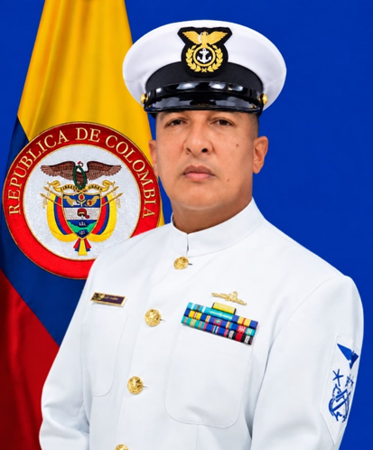

Armada Nacional de Colombia
Julio 2020 — Septiembre 2021

Ever Enrique Marchena Tapias
JTC · Fuerza Naval del Sur
Trayectoria
Se incorporó en enero de 1994 a la Base de Entrenamiento Naval A.R.C. “Barranquilla”, ingresa al escalafón militar como Suboficial de la gloriosa Marina de Colombia el 1 de noviembre de 1994, y ascendió al grado de Jefe Técnico de Comando el 29 de marzo de 2020. Graduado en la Escuela Naval de Suboficiales como Tecnólogo Naval en Electromecánica con énfasis en Controles Eléctricos, con área de conocimiento en Sistemas de Propulsión y Electricidad - Controles Automáticos, estudios universitarios en Ingeniería Industrial y Administración de Empresas.
Unidades
Remolcador de mar ARC “Pedro de Heredia”, ARC “Buenaventura”, Unidad Táctica Fluvial del Guaviare, ARC “Almirante Padilla”, Cuartel General Fuerza Naval del Sur, Círculo de Suboficiales de las FF.MM. Sede Colina Campestre, Supervisión de Proyectos Especiales de la Armada Nacional, División Personal Agregado en Entidades Públicas y OASPA Oficina Asesora Permanente Comando Armada Nacional.
Cargos
Electricista Remolcador ARC “Pedro de Heredia”, Electricista y Motorista ARC “Buenaventura”, Alumno Escuela Naval de Suboficiales ARC “Barranquilla”, Electricista Unidad Táctica Fluvial del Guaviare, Electricista Departamento de Ingeniería ARC “Almirante Padilla”, Jefe División Estadística Departamento de Ingeniería Fuerza Naval del Sur, Jefe de Estadística y Archivo Fuerza Naval del Sur, Jefe de Recreación y Deportes Círculo de Suboficiales FF.MM., Asesor de Proyectos y Supervisor Técnico Supervisión de Proyectos Especiales, Asesor de Comando Cuartel General Fuerza Naval del Sur, Secretario del Agregado Naval de Colombia en Perú y Personal Agregado en Entidades Públicas — Asesor OASPA.
Comisiones en el exterior
Wilhelmshaven (Alemania) 1998, Rodman-Colón (Panamá) 1999, EXPONAVAL Chile 2006, Operación Caribe 2008 Francia, PISAJ No. 12 Chile 2019 y Comisión Permanente como secretario del Agregado Naval en Perú 2021-2022.
Condecoraciones
- Orden del Mérito Naval “Almirante Padilla” — Compañero y Oficial
- Orden del Mérito Militar “Antonio Nariño” — Caballero
- Medalla Servicios Distinguidos a la Fuerza de Superficie
- Medalla Servicios Distinguidos a la Ingeniería Naval
- Medalla Servicios Distinguidos a las Fuerzas Militares de Colombia
- Medalla Militar “Fe en la Causa”
- Citación Presidencial de la Victoria Militar y Policial
- Medalla por tiempo de servicio 15, 20 y 25 años
- Distintivo Asesor de Comando para Jefes Técnicos
- Distintivo de 10 años de Embarque
- Cinco Jinetas de Buena Conducta
- Más de 170 felicitaciones por excelente desempeño profesional